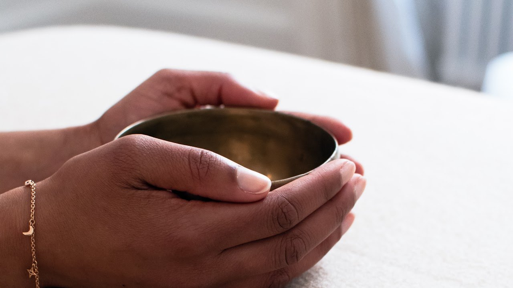
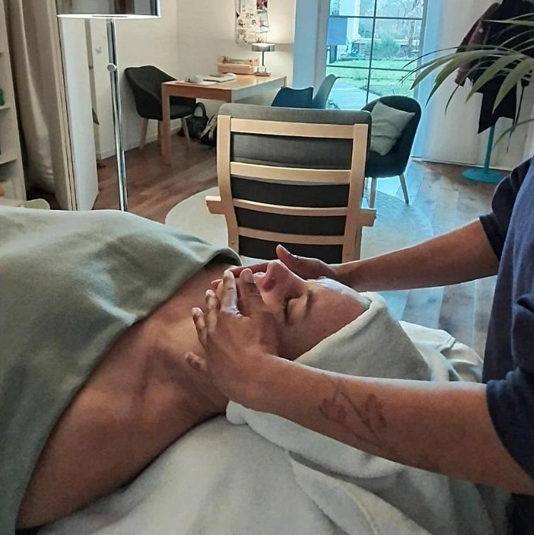
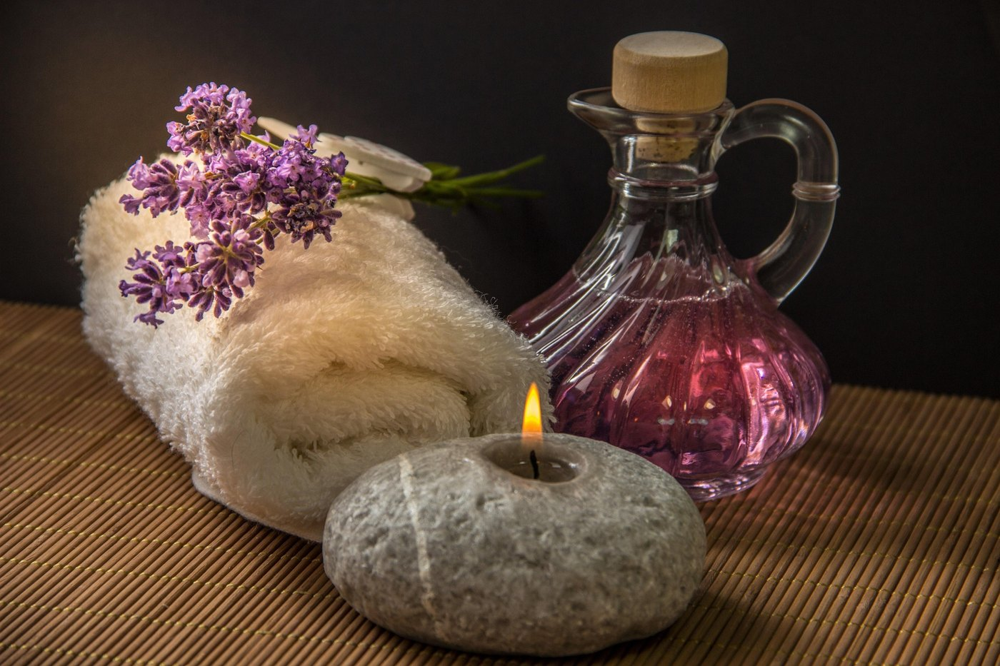
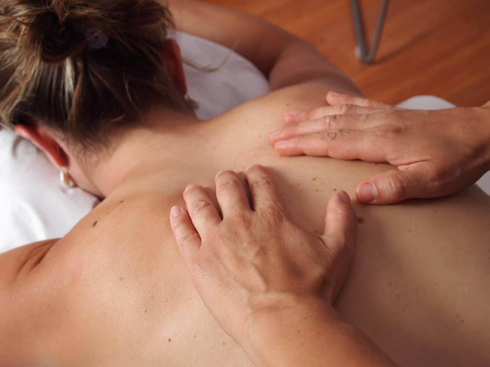

Reiki Usui
Le soin Rééquilibrage & Lâcher-prise. Idéal si tu te sens débordé(e), anxieux(se) ou vidé(e).
à partir de 50 €
Réserver une séance de ReikiAccompagnement individuel, Reiki Usui et massage Kobido à Couëron (44) et en visioconférence.
Aurélie Aké · Maison du Port, Couëron (44220) · Visio partout en France

5,0Où en es-tu aujourd'hui ? Que tu cherches à libérer des tensions physiques, clarifier ton esprit ou retrouver ton alignement, choisis la porte qui résonne avec ton besoin du moment.



Tu hésites encore entre deux offres ?Un premier échange t'aide à choisir la plus adaptée à ta situation.
Réserver un premier échangeFaire le point, retrouver du sens et avancer en confiance. Ce soin s'adresse à celles et ceux qui sont à la croisée des chemins : il t'aide à lever le flou mental, à écouter tes envies profondes et à faire des choix qui te ressemblent.
Échanges et exercices entre les séances. Paiement possible en plusieurs fois.
Réserver un premier échangeMon rôle n'est pas de te donner des réponses toutes faites, mais de t'aider à retrouver assez de clarté pour trouver les tiennes. Avec douceur, mais avec une vraie direction.
Une pratique énergétique douce pour relâcher les tensions, apaiser le mental et te recentrer, surtout en période de fatigue émotionnelle ou de transition.
Un massage japonais du visage, de la nuque et de la zone des clavicules, pour détendre les traits, relâcher les tensions et favoriser l'éclat du teint.
Trois soins, une seule séance. Reconnexion, Reiki Usui et massage Kobido enchaînés dans un même parcours, pour vivre un vrai temps pour toi et trouver ce qui te correspond le mieux.
145 €1 h 30 · au cabinet à Couëron
Le Reiki et le massage Kobido sont des pratiques de bien-être. Ils ne se substituent ni à un avis médical ni à un traitement.
Un temps pour toi, quand tu en as besoin.
Le soin Rééquilibrage & Lâcher-prise. Idéal si tu te sens débordé(e), anxieux(se) ou vidé(e).
à partir de 50 €
Réserver une séance de ReikiLe rituel Éclat & Détente du visage. Idéal si ta fatigue se lit sur ton visage et que tu souhaites allier soin anti-âge et lâcher-prise.
65 € au cabinet
Réserver un massage KobidoEt si vos équipes prenaient enfin le temps de respirer ? Des séances courtes, adaptées au rythme professionnel, pour contribuer à réduire le stress, à améliorer la concentration et à installer un climat de travail plus serein.
Une méditation guidée en groupe, pour se recentrer et renforcer la cohésion d'équipe.

Un soin individuel de détente, pour une vraie pause.
Une séance individuelle inspirée d'une méthode japonaise de détente.
Sur site, au cabinet ou en ligne · Formules sur mesure · Séance découverte offerte
Énergéticienne, Maître en Reiki Usui, praticienne en techniques d'accompagnement au changement (issues de la PNL) et en massage Kobido, j'accompagne depuis 2019 celles et ceux qui veulent retrouver apaisement, clarté et cohérence.
Aller mieux, ce n'est pas seulement calmer le mental ou retrouver de l'énergie. C'est aussi entendre ce que l'on veut vraiment, et se donner la permission de construire une vie qui nous ressemble.
« Belle rencontre lors d'un soin Kobido du visage qui m'a apporté une profonde détente intérieure. Son accueil m'a mise en confiance. »
« Découverte du Reiki : une merveilleuse aventure ! Elle est douce, pédagogue, d'une bienveillance et d'un accompagnement fin et efficace. »
« Un soin Kobido très dynamique mais très relaxant. Mon visage était plus lumineux et plus détendu. »
« Une découverte du Reiki, une expérience incroyable. Avec douceur et bienveillance, je me suis tout de suite sentie très à l'aise. »
« Quand tout semble aller mal, elle m'aide à me poser les bonnes questions et retrouver mon mindset. »
« La séance de Reiki m'a transporté dans un doux voyage où j'ai pu lâcher prise totalement. »
« Une séance énergétique avec Aurélie, c'est se ressourcer, se rebooster, se revaloriser. »
« Surprenant. Les résultats physiques et psychologiques ont été bluffants. Sceptique au départ, je recommande fortement. »
« Des moments pleins de douceur et de bienveillance. Je me suis sentie très sereine, l'esprit plus léger et bien ressourcée. »
« Elle m'a aidée à me recentrer et m'apaiser pendant une période compliquée, grâce à ses mots, ses questions et ses soins. »
« On m'avait conseillé le Reiki pour mieux vivre le changement de saison. Aurélie a tout de suite compris ma démarche. »
« Plusieurs séances de Reiki et des moments très agréables. Merci pour l'écoute et la bienveillance tout au long des séances. »
« Aurélie est d'une grande douceur et pleine de bienveillance. Elle prend le temps d'échanger pour vraiment comprendre la situation. »
« Une thérapeute très agréable, à l'écoute, qui m'a accompagnée efficacement et sereinement dans ma réflexion. »
« Superbe moment ! Ça m'a vraiment relaxée et je me sens plus alignée. À refaire très vite ! »
« J'étais épuisée moralement. Avec une écoute attentive et une séance de Reiki, Aurélie m'a redonné une énergie incroyable ! »
« À chaque fois je suis ressortie apaisée et reboostée ! Tous les outils proposés m'ont permis de me recentrer. »
« Un lieu agréable et cosy : professionnalisme, détente et calme étaient au rendez-vous. On en redemande ! »
« Très beau lieu. Séance apaisante et relaxante. J'étais non loin du burn-out. Aurélie a su mettre en pratique son professionnalisme. »
« Aurélie est bienveillante et chaleureuse, le soin Kobido était un véritable mélange de douceur et de relaxation. »
Chaque réponse te mène vers la bonne offre, avec le bouton pour passer à l'action.
Si tu tournes en rond ou si tu hésites sur des choix, Reconnexion est faite pour toi. Si tu es fatigué(e) et que tu as besoin de relâcher, choisis le Reiki. Si tu veux t'offrir une pause pour ton visage et ta nuque, le massage Kobido t'attend. Un doute ? Un premier échange t'aide à trancher.
Par un premier échange. Nous regardons ensemble où tu en es et si l'accompagnement Reconnexion correspond à ce que tu recherches. Tu n'as pas besoin d'avoir les réponses avant de commencer : nous les faisons émerger ensemble.
Reconnexion s'adresse aux personnes qui ressentent le besoin de changement, de clarté ou d'une nouvelle direction, et qui souhaitent être accompagnées pour comprendre ce qu'elles veulent réellement et passer à l'action.
Une séance permet de prendre du recul et de t'apaiser à un moment donné. Reconnexion s'inscrit dans la durée : comprendre ce qui se joue, clarifier ce que tu veux et mettre en place des changements concrets.
Reconnexion n'est pas une succession de séances isolées : c'est un accompagnement personnalisé sur plusieurs semaines, avec un vrai travail de fond sur tes besoins, tes choix et leur mise en œuvre. Chaque séance coûte 125 €, soit 500 € pour les 4 séances, avec paiement possible en plusieurs fois.
Le Reiki est une technique japonaise de relaxation et de régulation du stress qui se pratique par un toucher léger et fixe (ou une simple proximité des mains) sur différents points du corps.
C’est une invitation au relâchement complet. Allongé et entièrement habillé, vous n'avez absolument rien à faire, aucune posture à tenir, ni aucune pensée à guider. Vous vous laissez simplement porter.
3 raisons de l'essayer :
Une séance de Reiki Usui : un temps pour relâcher les tensions, apaiser le mental et te recentrer. Tu peux parler… ou rester en silence, c'est toi qui choisis. Une séance dure 60 minutes.
Non, aucune connaissance particulière n'est nécessaire, ni pour une séance de Reiki ni pour l'accompagnement Reconnexion. Les outils sont choisis en fonction de tes besoins et de ce qui peut réellement t'aider.
Oui. Le Reiki existe en ligne (50 € au lieu de 65 € au cabinet) et l'accompagnement Reconnexion se fait en visioconférence, partout en France.
Le massage Kobido est une technique japonaise de massage du visage.
Également appelé « lifting japonais naturel », le massage Kobido combine des mouvements rapides et rythmés, des techniques manuelles plus précises et des pressions exercées sur différentes zones du visage. Il associe notamment des gestes de massage, de pression et des manœuvres destinées à détendre et stimuler les tissus du visage.
3 raisons de l'essayer :
Le Reiki relâche le mental et les émotions, le Kobido détend le visage, la nuque et les clavicules. Les deux durent 60 minutes. Choisis selon ce dont tu as besoin aujourd'hui.
Un échange préalable sur tes attentes, puis un massage sur table : tu restes habillé(e). Il travaille le visage, la nuque et la zone des clavicules, avec un temps de retour autour d'une boisson chaude. Les éventuelles contre-indications sont à vérifier avant de réserver [à préciser].
Je propose des séances courtes, adaptées au rythme professionnel : relaxation guidée en groupe, massage Kobido ou séance énergétique en individuel, sur site, au cabinet ou en ligne. Les formules sont sur mesure et la séance découverte est offerte.
Non. Le Reiki, le massage Kobido et les techniques d'accompagnement sont des pratiques de bien-être. Elles ne se substituent ni à un avis médical, ni à un traitement, ni à un suivi psychologique.
Dis-moi en quelques mots où tu en es, ou réserve directement un créneau. Je te réponds personnellement.